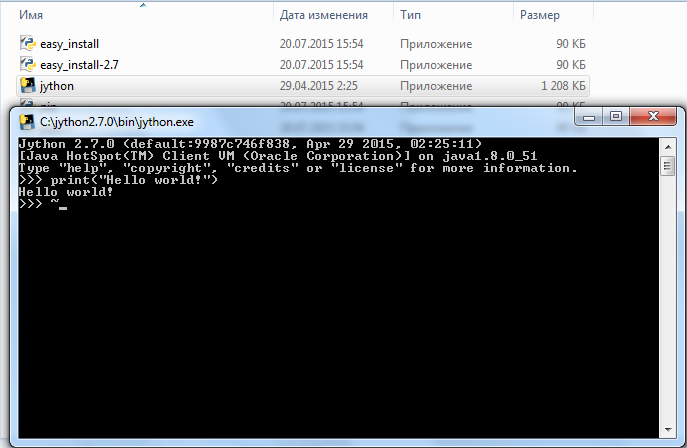
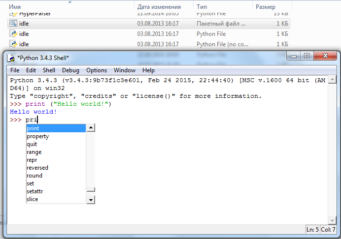

Python / Jython IDLE
Описание языка jython: http://www.jython.org/jythonbook/en/1.0/
(Jython Scripting) http://fiji.sc/Jython_Scripting
Python: https://www.python.org/
Python (download for windows): https://www.python.org/downloads/windows/
PyDev (PyDev is a Python IDE for Eclipse, which may be used in Python, Jython and IronPython development.): http://www.pydev.org/
Среда выполнения jython находится по адресу: C:\jython2.7.0\bin

Так же можно использовать IDLE поставляемый в пакете Python находящийся по адресу: C:\Python34\Lib\idlelib

Created with the Personal Edition of HelpNDoc: Easily create HTML Help documents